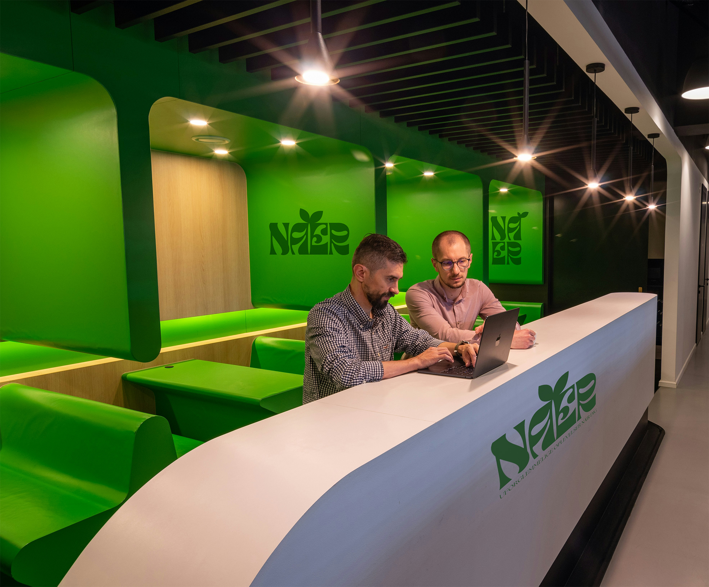

Nær er mere end bare en digital platform, det er en bevægelse, der handler om at bringe mennesker tættere sammen gennem oplevelser, fællesskaber og nysgerrighed. Vi ved, at mange unge leder efter alternativer til de dyre, kommercielle oplevelser. Derfor har vi skabt et sted, hvor du kan finde sociale, prisvenlige og bæredygtige aktiviteter i hele Danmark. Det kan være alt fra små lokale events, markeder og koncerter til skjulte naturperler og unikke fællesskaber. Hos Nær tror vi på, at det bedste ikke altid findes langt væk, ofte ligger det lige rundt om hjørnet. Vores mission er at gøre det lettere at opdage og dele de oplevelser, der skaber minder, styrker relationer og samtidig støtter de lokale initiativer, der gør Danmark levende.
Bag Nær finder du et engageret team af studerende, kreative ildsjæle og digitale pionerer. Vi kommer med forskellige baggrunde inden for design, teknologi, kommunikation og oplevelsesøkonomi, men vi er forenet af én fælles vision: at gøre det nemmere for unge at finde oplevelser, der både er meningsfulde og tilgængelige. Vi arbejder tæt sammen med lokale aktører og foreninger, fordi vi tror på, at de små initiativer er med til at forme de store fællesskaber. Som team brænder vi for at kombinere vores faglige viden med kreativitet og nysgerrighed, men vigtigst af alt: vi ønsker at skabe et produkt, vi selv ville bruge. Nær er ikke bare et studieprojekt. Det er en platform skabt af unge, for unge, med ambitionen om at vokse sig større end os selv.
Vi ønsker at skabe et digitalt samlingspunkt, hvor unge mellem 18 og 35 år kan finde inspiration til oplevelser, der passer til både hverdagen og weekenden. Vores mål er at gøre det enkelt og tilgængeligt at opdage nye steder, nye mennesker og nye måder at være sammen på – uden at det kræver hverken mange penge eller store planlægningsressourcer. For os handler det ikke kun om at finde aktiviteter, men også om at skabe rammer, hvor ensomhed kan brydes, og nye relationer kan vokse frem. Nær.dk skal være et sted, hvor man kan udvide sin omgangskreds, opdage fællesskaber og føle sig som en del af noget større – uanset om man er til små intime sammenkomster eller store events. Samtidig har vi et langsigtet mål: at styrke bæredygtighed og lokal forankring i Danmark. Når vi vælger at støtte lokale aktører, små producenter og bæredygtige initiativer, er det fordi vi tror på, at fællesskab og ansvar går hånd i hånd. Vi ønsker at inspirere vores brugere til at tage aktive valg, der både gavner dem selv, deres by og deres omgivelser. I sidste ende er vores vision, at Nær skal være mere end en platform. Det skal være en kultur – et sted, hvor nærvær, fællesskab og oplevelser smelter sammen og minder os om, at de største eventyr ofte findes tættere på, end vi tror.